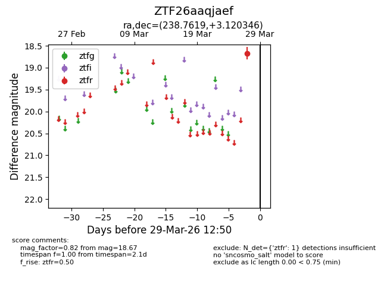
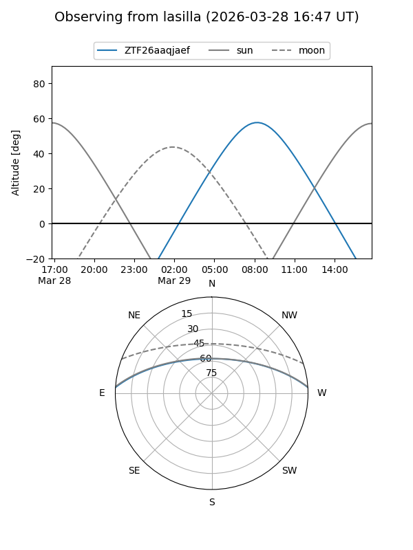
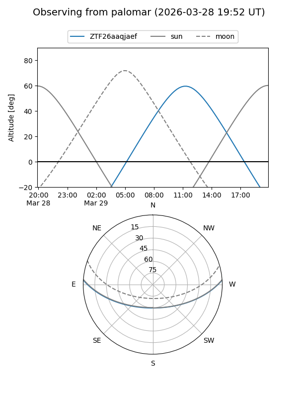

ZTF26aaqjaef
Target ZTF26aaqjaef at 2026-03-29 12:53
Aliases and brokers:
FINK: link
Lasair: link
ALeRCE: link
alt names
ZTF26aaqjaef (ztf,fink_ztf)
Coordinates:
equatorial (ra, dec) = 238.7619,+3.12035
equatorial (HMS+DMS) = 15:55:02.85,+03:07:13.25
galactic (l, b) = (12.4118,+40.03308)
Flags:
Photometry:
last ztfr=18.67
1 ztfr detections
Lightcurve

Visibility


Additional plots